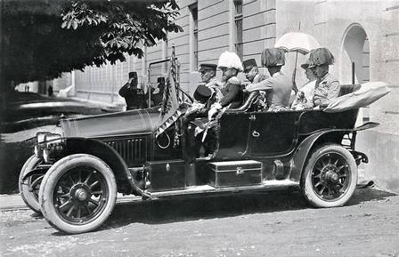

Sarajevo
28 de Junho de 1914

O sol de verão queima o cais do rio Miljacka. A multidão observa curiosa o automóvel aberto que avança lentamente. Dentro dele, o herdeiro do trono austro-húngaro e sua esposa.
Entre as pessoas, há um rapaz de uns 19 anos. A mão direita dentro do casaco. O olhar fixo. Tenso. Como se carregasse o peso de uma nação inteira nos ombros estreitos.
Um Encontro no Limiar da História
Você se aproxima do rapaz. Ele evita seu olhar. A respiração acelerada. A mão ainda dentro do casaco. Você sente o cheiro de pólvora, medo e determinação misturados.
Um Instante de Conexão Perdida
Ele levanta os olhos por um segundo. Algo treme ali dentro. Mas o dever é maior que a dúvida. Ele murmura algo incompreensível e se afasta. Minutos depois… dois tiros cortam o ar.
Palavras que Aceleram o Fim
Sua frase o atinge como um golpe. Os olhos dele se inflamam. Ele age antes do previsto. Dois disparos. Mais rápidos. Mais furiosos.
Corpo contra o Inevitável
O Alarme que Chegou Tarde
Um Grito Perdido no Vento
O motorista ouve, hesita… mas o carro já está na mira. Dois disparos. O século XX começa a desabar.
O Silêncio que Permitiu

Você não se move. Dois estampidos secos. O sangue mancha o estofado do carro. O rapaz é agarrado pela multidão e pela polícia.
O Mundo em Chamas
1914–1918: 16–20 milhões de mortos.
1939–1945: mais 70–85 milhões.
Holocausto, bombas atômicas, genocídios coloniais, revoluções devoradas por si mesmas.
Uma Paz Comprada com Silêncio
O arquiduque sobrevive. A guerra mundial é adiada. Mas o Império responde com mão de ferro: prisões em massa, censura, campos de internamento, execuções sumárias.
O Preço das Suas Escolhas
Se o atentado ocorreu: ≈ 90–110 milhões de mortes diretas/indiretas no século XX
Se o atentado foi evitado: ≈ 8–25 milhões em repressão, guerras civis adiadas e conflitos derivados